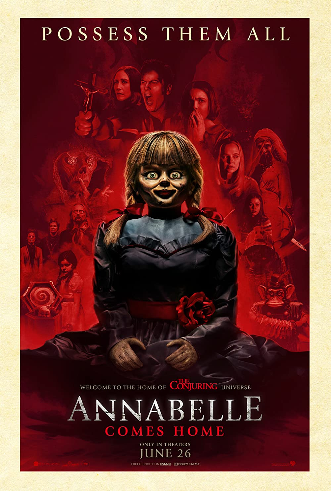
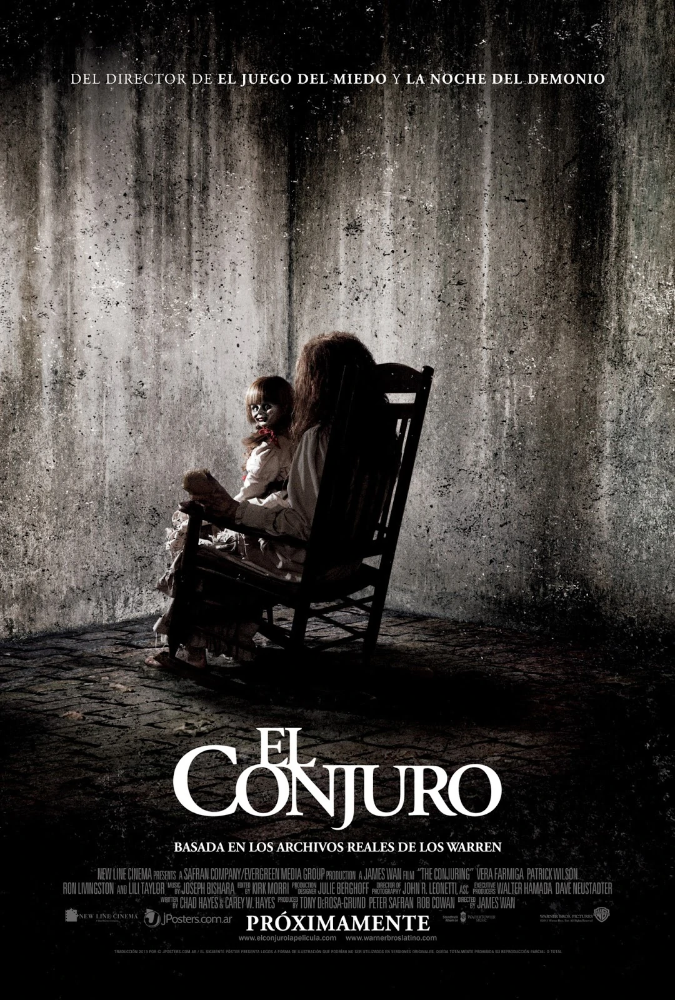

Películas de No Ficcion
|  |
|---|
| Anabelle |
| 1 volumen en Netflix |
| Annabelle es una muñeca supuestamente encantada que se encuentra en el museo de lo oculto perteneciente a los investigadores paranormales Ed y Lorraine Warren. Un personaje basado en la muñeca es un antagonista recurrente en las películas de The Conjuring. |
|  |
|---|
| El conjuro 2 |
 |
| 1 volumen en Netflix |
| La película sigue a los Warren mientras viajan a Reino Unido para ayudar a la familia Hodgson, que está experimentando actividad poltergeist en su casa de consejo de Enfield en 1977; que más tarde se conocería como el Poltergeist de Enfield. The Conjuring 2 fue estrenada en Norteamérica el 10 de junio de 2016. |